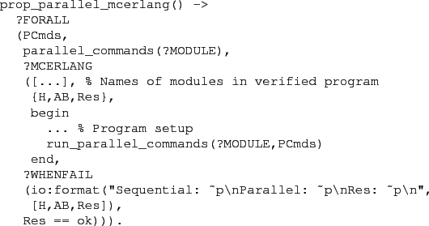

Next: Module Information Up: McErlang User Manual 1 Previous: A McErlang Application Contents
The QuickCheck-McErlang interface is distributed with QuickCheck
and provides the capability to use McErlang to verify
QuickCheck parallel and sequential state machines.
To start a verification run using the interface first the
McErlang application must be started using @mce_app:start()@.
An example QuickCheck property which uses McErlang as the verification
engine is shown below:

For more information concerning the interface see the QuickCheck documentation.